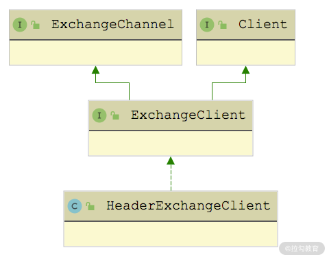
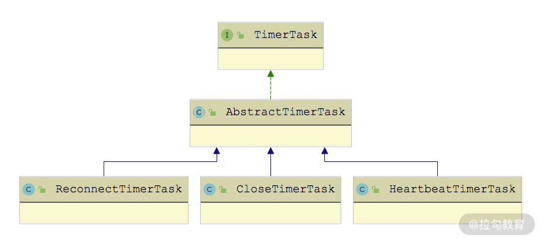
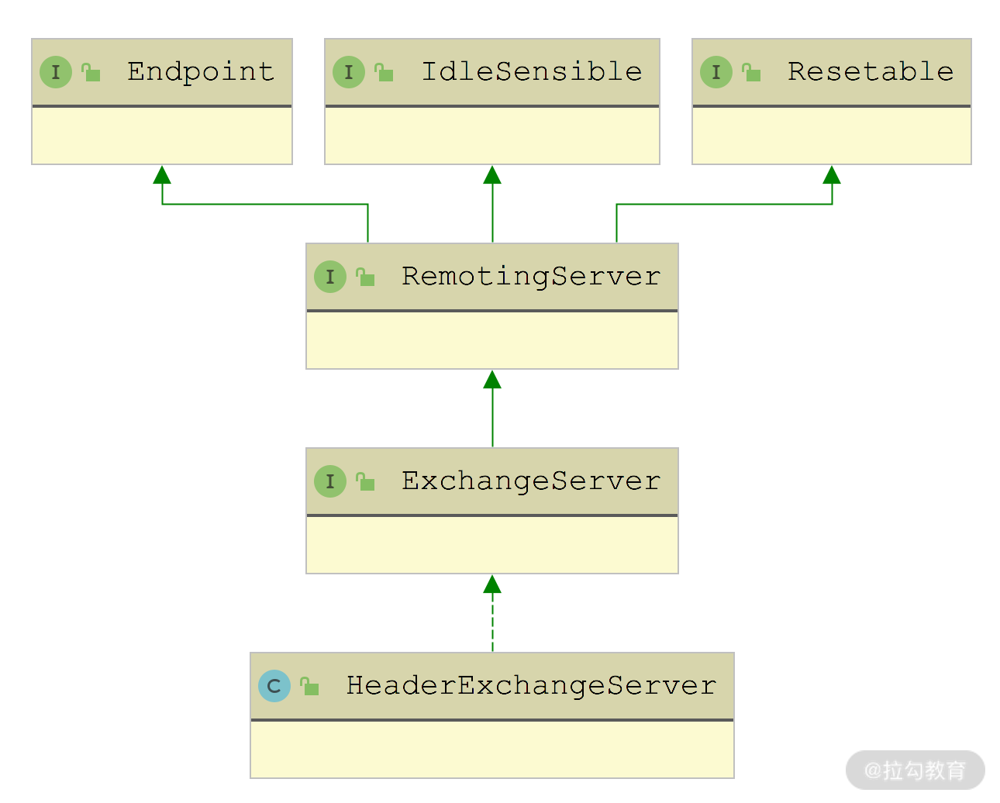
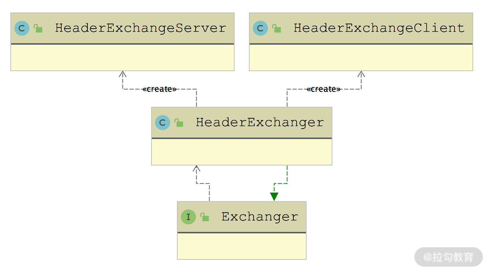
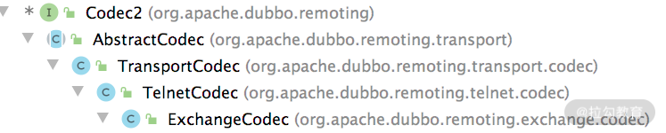
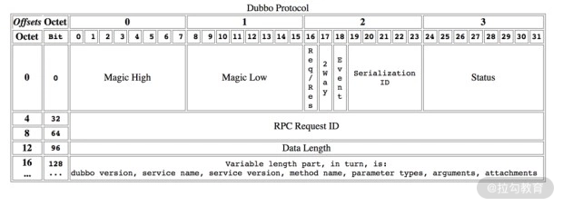

- 00 开篇词 深入掌握 Dubbo 原理与实现，提升你的职场竞争力.md.html
- 01 Dubbo 源码环境搭建：千里之行，始于足下.md.html
- 02 Dubbo 的配置总线：抓住 URL，就理解了半个 Dubbo.md.html
- 03 Dubbo SPI 精析，接口实现两极反转（上）.md.html
- 04 Dubbo SPI 精析，接口实现两极反转（下）.md.html
- 05 海量定时任务，一个时间轮搞定.md.html
- 06 ZooKeeper 与 Curator，求你别用 ZkClient 了（上）.md.html
- 07 ZooKeeper 与 Curator，求你别用 ZkClient 了（下）.md.html
- 08 代理模式与常见实现.md.html
- 09 Netty 入门，用它做网络编程都说好（上）.md.html
- 10 Netty 入门，用它做网络编程都说好（下）.md.html
- 11 简易版 RPC 框架实现（上）.md.html
- 12 简易版 RPC 框架实现（下）.md.html
- 13 本地缓存：降低 ZooKeeper 压力的一个常用手段.md.html
- 14 重试机制是网络操作的基本保证.md.html
- 15 ZooKeeper 注册中心实现，官方推荐注册中心实践.md.html
- 16 Dubbo Serialize 层：多种序列化算法，总有一款适合你.md.html
- 17 Dubbo Remoting 层核心接口分析：这居然是一套兼容所有 NIO 框架的设计？.md.html
- 18 Buffer 缓冲区：我们不生产数据，我们只是数据的搬运工.md.html
- 19 Transporter 层核心实现：编解码与线程模型一文打尽（上）.md.html
- 20 Transporter 层核心实现：编解码与线程模型一文打尽（下）.md.html
- 21 Exchange 层剖析：彻底搞懂 Request-Response 模型（上）.md.html
- 22 Exchange 层剖析：彻底搞懂 Request-Response 模型（下）.md.html
- 23 核心接口介绍，RPC 层骨架梳理.md.html
- 24 从 Protocol 起手，看服务暴露和服务引用的全流程（上）.md.html
- 25 从 Protocol 起手，看服务暴露和服务引用的全流程（下）.md.html
- 26 加餐：直击 Dubbo “心脏”，带你一起探秘 Invoker（上）.md.html
- 27 加餐：直击 Dubbo “心脏”，带你一起探秘 Invoker（下）.md.html
- 28 复杂问题简单化，代理帮你隐藏了多少底层细节？.md.html
- 29 加餐：HTTP 协议 + JSON-RPC，Dubbo 跨语言就是如此简单.md.html
- 30 Filter 接口，扩展 Dubbo 框架的常用手段指北.md.html
- 31 加餐：深潜 Directory 实现，探秘服务目录玄机.md.html
- 32 路由机制：请求到底怎么走，它说了算（上）.md.html
- 33 路由机制：请求到底怎么走，它说了算（下）.md.html
- 34 加餐：初探 Dubbo 动态配置的那些事儿.md.html
- 35 负载均衡：公平公正物尽其用的负载均衡策略，这里都有（上）.md.html
- 36 负载均衡：公平公正物尽其用的负载均衡策略，这里都有（下）.md.html
- 37 集群容错：一个好汉三个帮（上）.md.html
- 38 集群容错：一个好汉三个帮（下）.md.html
- 39 加餐：多个返回值不用怕，Merger 合并器来帮忙.md.html
- 40 加餐：模拟远程调用，Mock 机制帮你搞定.md.html
- 41 加餐：一键通关服务发布全流程.md.html
- 42 加餐：服务引用流程全解析.md.html
- 43 服务自省设计方案：新版本新方案.md.html
- 44 元数据方案深度剖析，如何避免注册中心数据量膨胀？.md.html
- 45 加餐：深入服务自省方案中的服务发布订阅（上）.md.html
- 46 加餐：深入服务自省方案中的服务发布订阅（下）.md.html
- 47 配置中心设计与实现：集中化配置 and 本地化配置，我都要（上）.md.html
- 48 配置中心设计与实现：集中化配置 and 本地化配置，我都要（下）.md.html
- 49 结束语 认真学习，缩小差距.md.html
22 Exchange 层剖析：彻底搞懂 Request-Response 模型（下）
在上一课时中，我们重点分析了 Exchange 层中 Channel 接口以及 ChannelHandler 接口的核心实现，同时还介绍 Request、Response 两个基础类，以及 DefaultFuture 这个 Future 实现。本课时，我们将继续讲解 Exchange 层其他接口的实现逻辑。
HeaderExchangeClient
HeaderExchangeClient 是 Client 装饰器，主要为其装饰的 Client 添加两个功能：
- 维持与 Server 的长连状态，这是通过定时发送心跳消息实现的；
- 在因故障掉线之后，进行重连，这是通过定时检查连接状态实现的。
因此，HeaderExchangeClient 侧重定时轮资源的分配、定时任务的创建和取消。
HeaderExchangeClient 实现的是 ExchangeClient 接口，如下图所示，间接实现了 ExchangeChannel 和 Client 接口，ExchangeClient 接口是个空接口，没有定义任何方法。

HeaderExchangeClient 继承关系图
HeaderExchangeClient 中有以下两个核心字段。
- client（Client 类型）：被修饰的 Client 对象。HeaderExchangeClient 中对 Client 接口的实现，都会委托给该对象进行处理。
- channel（ExchangeChannel 类型）：Client 与服务端建立的连接，HeaderExchangeChannel 也是一个装饰器，在前面我们已经详细介绍过了，这里就不再展开介绍。HeaderExchangeClient 中对 ExchangeChannel 接口的实现，都会委托给该对象进行处理。
HeaderExchangeClient 构造方法的第一个参数封装 Transport 层的 Client 对象，第二个参数 startTimer参与控制是否开启心跳定时任务和重连定时任务，如果为 true，才会进一步根据其他条件，最终决定是否启动定时任务。这里我们以心跳定时任务为例：
private void startHeartBeatTask(URL url) {
if (!client.canHandleIdle()) { // Client的具体实现决定是否启动该心跳任务
AbstractTimerTask.ChannelProvider cp = () -> Collections.singletonList(HeaderExchangeClient.this);
// 计算心跳间隔，最小间隔不能低于1s
int heartbeat = getHeartbeat(url);
long heartbeatTick = calculateLeastDuration(heartbeat);
// 创建心跳任务
this.heartBeatTimerTask = new HeartbeatTimerTask(cp, heartbeatTick, heartbeat);
// 提交到IDLE_CHECK_TIMER这个时间轮中等待执行
IDLE_CHECK_TIMER.newTimeout(heartBeatTimerTask, heartbeatTick, TimeUnit.MILLISECONDS);
}
}
重连定时任务是在 startReconnectTask() 方法中启动的，其中会根据 URL 中的参数决定是否启动任务。重连定时任务最终也是提交到 IDLE_CHECK_TIMER 这个时间轮中，时间轮定义如下：
private static final HashedWheelTimer IDLE_CHECK_TIMER = new HashedWheelTimer(
new NamedThreadFactory("dubbo-client-idleCheck", true), 1, TimeUnit.SECONDS, TICKS_PER_WHEEL);
其实，startReconnectTask() 方法的具体实现与前面展示的 startHeartBeatTask() 方法类似，这里就不再赘述。
下面我们继续回到心跳定时任务进行分析，你可以回顾第 20 课时介绍的 NettyClient 实现，其 canHandleIdle() 方法返回 true，表示该实现可以自己发送心跳请求，无须 HeaderExchangeClient 再启动一个定时任务。NettyClient 主要依靠 IdleStateHandler 中的定时任务来触发心跳事件，依靠 NettyClientHandler 来发送心跳请求。
对于无法自己发送心跳请求的 Client 实现，HeaderExchangeClient 会为其启动 HeartbeatTimerTask 心跳定时任务，其继承关系如下图所示：

TimerTask 继承关系图
我们先来看 AbstractTimerTask 这个抽象类，它有三个字段。
- channelProvider（ChannelProvider类型）：ChannelProvider 是 AbstractTimerTask 抽象类中定义的内部接口，定时任务会从该对象中获取 Channel。
- tick（Long类型）：任务的过期时间。
- cancel（boolean类型）：任务是否已取消。
AbstractTimerTask 抽象类实现了 TimerTask 接口的 run() 方法，首先会从 ChannelProvider 中获取此次任务相关的 Channel 集合（在 Client 端只有一个 Channel，在 Server 端有多个 Channel），然后检查 Channel 的状态，针对未关闭的 Channel 执行 doTask() 方法处理，最后通过 reput() 方法将当前任务重新加入时间轮中，等待再次到期执行。
AbstractTimerTask.run() 方法的具体实现如下：
public void run(Timeout timeout) throws Exception {
// 从ChannelProvider中获取任务要操作的Channel集合
Collection<Channel> c = channelProvider.getChannels();
for (Channel channel : c) {
if (channel.isClosed()) { // 检测Channel状态
continue;
}
doTask(channel); // 执行任务
}
reput(timeout, tick); // 将当前任务重新加入时间轮中，等待执行
}
doTask() 是一个 AbstractTimerTask 留给子类实现的抽象方法，不同的定时任务执行不同的操作。例如，HeartbeatTimerTask.doTask() 方法中会读取最后一次读写时间，然后计算距离当前的时间，如果大于心跳间隔，就会发送一个心跳请求，核心实现如下：
protected void doTask(Channel channel) {
// 获取最后一次读写时间
Long lastRead = lastRead(channel);
Long lastWrite = lastWrite(channel);
if ((lastRead != null && now() - lastRead > heartbeat)
|| (lastWrite != null && now() - lastWrite > heartbeat)) {
// 最后一次读写时间超过心跳时间，就会发送心跳请求
Request req = new Request();
req.setVersion(Version.getProtocolVersion());
req.setTwoWay(true);
req.setEvent(HEARTBEAT_EVENT);
channel.send(req);
}
}
这里 lastRead 和 lastWrite 时间戳，都是从要待处理 Channel 的附加属性中获取的，对应的 Key 分别是：KEY_READ_TIMESTAMP、KEY_WRITE_TIMESTAMP。你可以回顾前面课程中介绍的 HeartbeatHandler，它属于 Transport 层，是一个 ChannelHandler 的装饰器，在其 connected() 、sent() 方法中会记录最后一次写操作时间，在其 connected()、received() 方法中会记录最后一次读操作时间，在其 disconnected() 方法中会清理这两个时间戳。
在 ReconnectTimerTask 中会检测待处理 Channel 的连接状态，以及读操作的空闲时间，对于断开或是空闲时间较长的 Channel 进行重连，具体逻辑这里就不再展开了。
HeaderExchangeClient 最后要关注的是它的关闭流程，具体实现在 close() 方法中，如下所示：
public void close(int timeout) {
startClose(); // 将closing字段设置为true
doClose(); // 关闭心跳定时任务和重连定时任务
channel.close(timeout); // 关闭HeaderExchangeChannel
}
在 HeaderExchangeChannel.close(timeout) 方法中首先会将自身的 closed 字段设置为 true，这样就不会继续发送请求。如果当前 Channel 上还有请求未收到响应，会循环等待至收到响应，如果超时未收到响应，会自己创建一个状态码将连接关闭的 Response 交给 DefaultFuture 处理，与收到 disconnected 事件相同。然后会关闭 Transport 层的 Channel，以 NettyChannel 为例，NettyChannel.close() 方法会先将自身的 closed 字段设置为 true，清理 CHANNEL_MAP 缓存中的记录，以及 Channel 的附加属性，最后才是关闭 io.netty.channel.Channel。
HeaderExchangeServer
下面再来看 HeaderExchangeServer，其继承关系如下图所示，其中 Endpoint、RemotingServer、Resetable 这三个接口我们在前面已经详细介绍过了，这里不再重复。

HeaderExchangeServer 的继承关系图
与前面介绍的 HeaderExchangeClient 一样，HeaderExchangeServer 是 RemotingServer 的装饰器，实现自 RemotingServer 接口的大部分方法都委托给了所修饰的 RemotingServer 对象。
在 HeaderExchangeServer 的构造方法中，会启动一个 CloseTimerTask 定时任务，定期关闭长时间空闲的连接，具体的实现方式与 HeaderExchangeClient 中的两个定时任务类似，这里不再展开分析。
需要注意的是，前面课时介绍的 NettyServer 并没有启动该定时任务，而是靠 NettyServerHandler 和 IdleStateHandler 实现的，原理与 NettyClient 类似，这里不再展开，你若感兴趣的话，可以回顾第 20课时或是查看 CloseTimerTask 的具体实现。
在 19 课时介绍 Transport Server 的时候，我们并没有过多介绍其关闭流程，这里我们就通过 HeaderExchangeServer 自顶向下梳理整个 Server 端关闭流程。先来看 HeaderExchangeServer.close() 方法的关闭流程：
- 将被修饰的 RemotingServer 的 closing 字段设置为 true，表示这个 Server 端正在关闭，不再接受新 Client 的连接。你可以回顾第 19 课时中介绍的 AbstractServer.connected() 方法，会发现 Server 正在关闭或是已经关闭时，则直接关闭新建的 Client 连接。
- 向 Client 发送一个携带 ReadOnly 事件的请求（根据 URL 中的配置决定是否发送，默认为发送）。在接收到该请求之后，Client 端的 HeaderExchangeHandler 会在 Channel 上添加 Key 为 “channel.readonly” 的附加信息，上层调用方会根据该附加信息，判断该连接是否可写。
- 循环去检测是否还存在 Client 与当前 Server 维持着长连接，直至全部 Client 断开连接或超时。
- 更新 closed 字段为 true，之后 Client 不会再发送任何请求或是回复响应了。
- 取消 CloseTimerTask 定时任务。
- 调用底层 RemotingServer 对象的 close() 方法。以 NettyServer 为例，其 close() 方法会先调用 AbstractPeer 的 close() 方法将自身的 closed 字段设置为 true；然后调用 doClose() 方法关闭 boss Channel（即用来接收客户端连接的 Channel），关闭 channels 集合中记录的 Channel（这些 Channel 是与 Client 之间的连接），清理 channels 集合；最后，关闭 bossGroup 和 workerGroup 两个线程池。
HeaderExchangeServer.close() 方法的核心逻辑如下：
public void close(final int timeout) {
startClose(); // 将底层RemotingServer的closing字段设置为true，表示当前Server正在关闭，不再接收连接
if (timeout > 0) {
final long max = (long) timeout;
final long start = System.currentTimeMillis();
if (getUrl().getParameter(Constants.CHANNEL_SEND_READONLYEVENT_KEY, true)) {
// 发送ReadOnly事件请求通知客户端
sendChannelReadOnlyEvent();
}
while (HeaderExchangeServer.this.isRunning()
&& System.currentTimeMillis() - start < max) {
Thread.sleep(10); // 循环等待客户端断开连接
}
}
doClose(); // 将自身closed字段设置为true，取消CloseTimerTask定时任务
server.close(timeout); // 关闭Transport层的Server
}
通过对上述关闭流程的分析，你就可以清晰地知道 HeaderExchangeServer 优雅关闭的原理。
HeaderExchanger
对于上层来说，Exchange 层的入口是 Exchangers 这个门面类，其中提供了多个 bind() 以及 connect() 方法的重载，这些重载方法最终会通过 SPI 机制，获取 Exchanger 接口的扩展实现，这个流程与第 17 课时介绍的 Transport 层的入口—— Transporters 门面类相同。
我们可以看到 Exchanger 接口的定义与前面介绍的 Transporter 接口非常类似，同样是被 @SPI 接口修饰（默认扩展名为“header”，对应的是 HeaderExchanger 这个实现），bind() 方法和 connect() 方法也同样是被 @Adaptive 注解修饰，可以通过 URL 参数中的 exchanger 参数值指定扩展名称来覆盖默认值。
@SPI(HeaderExchanger.NAME)
public interface Exchanger {
@Adaptive({Constants.EXCHANGER_KEY})
ExchangeServer bind(URL url, ExchangeHandler handler) throws RemotingException;
@Adaptive({Constants.EXCHANGER_KEY})
ExchangeClient connect(URL url, ExchangeHandler handler) throws RemotingException;
}
Dubbo 只为 Exchanger 接口提供了 HeaderExchanger 这一个实现，其中 connect() 方法创建的是 HeaderExchangeClient 对象，bind() 方法创建的是 HeaderExchangeServer 对象，如下图所示：

HeaderExchanger 门面类
从 HeaderExchanger 的实现可以看到，它会在 Transport 层的 Client 和 Server 实现基础之上，添加前文介绍的 HeaderExchangeClient 和 HeaderExchangeServer 装饰器。同时，为上层实现的 ExchangeHandler 实例添加了 HeaderExchangeHandler 以及 DecodeHandler 两个修饰器：
public class HeaderExchanger implements Exchanger {
public static final String NAME = "header";
@Override
public ExchangeClient connect(URL url, ExchangeHandler handler) throws RemotingException {
return new HeaderExchangeClient(Transporters.connect(url, new DecodeHandler(new HeaderExchangeHandler(handler))), true);
}
@Override
public ExchangeServer bind(URL url, ExchangeHandler handler) throws RemotingException {
return new HeaderExchangeServer(Transporters.bind(url, new DecodeHandler(new HeaderExchangeHandler(handler))));
}
}
再谈 Codec2
在前面第 17 课时介绍 Dubbo Remoting 核心接口的时候提到，Codec2 接口提供了 encode() 和 decode() 两个方法来实现消息与字节流之间的相互转换。需要注意与 DecodeHandler 区分开来，DecodeHandler 是对请求体和响应结果的解码，Codec2 是对整个请求和响应的编解码。
这里重点介绍 Transport 层和 Exchange 层对 Codec2 接口的实现，涉及的类如下图所示：

AbstractCodec抽象类并没有实现 Codec2 中定义的接口方法，而是提供了几个给子类用的基础方法，下面简单说明这些方法的功能。
- getSerialization() 方法：通过 SPI 获取当前使用的序列化方式。
- checkPayload() 方法：检查编解码数据的长度，如果数据超长，会抛出异常。
- isClientSide()、isServerSide() 方法：判断当前是 Client 端还是 Server 端。
接下来看TransportCodec，我们可以看到这类上被标记了 @Deprecated 注解，表示已经废弃。TransportCodec 的实现非常简单，其中根据 getSerialization() 方法选择的序列化方法对传入消息或 ChannelBuffer 进行序列化或反序列化，这里就不再介绍 TransportCodec 实现了。
TelnetCodec继承了 TransportCodec 序列化和反序列化的基本能力，同时还提供了对 Telnet 命令处理的能力。
最后来看ExchangeCodec，它在 TelnetCodec 的基础之上，添加了处理协议头的能力。下面是 Dubbo 协议的格式，能够清晰地看出协议中各个数据所占的位数：

Dubbo 协议格式
结合上图，我们来深入了解一下 Dubbo 协议中各个部分的含义：
- 0~7 位和 8~15 位分别是 Magic High 和 Magic Low，是固定魔数值（0xdabb），我们可以通过这两个 Byte，快速判断一个数据包是否为 Dubbo 协议，这也类似 Java 字节码文件里的魔数。
- 16 位是 Req/Res 标识，用于标识当前消息是请求还是响应。
- 17 位是 2Way 标识，用于标识当前消息是单向还是双向。
- 18 位是 Event 标识，用于标识当前消息是否为事件消息。
- 19~23 位是序列化类型的标志，用于标识当前消息使用哪一种序列化算法。
- 24~31 位是 Status 状态，用于记录响应的状态，仅在 Req/Res 为 0（响应）时有用。
- 32~95 位是 Request ID，用于记录请求的唯一标识，类型为 long。
- 96~127 位是序列化后的内容长度，该值是按字节计数，int 类型。
- 128 位之后是可变的数据，被特定的序列化算法（由序列化类型标志确定）序列化后，每个部分都是一个 byte [] 或者 byte。如果是请求包（Req/Res = 1），则每个部分依次为：Dubbo version、Service name、Service version、Method name、Method parameter types、Method arguments 和 Attachments。如果是响应包（Req/Res = 0），则每个部分依次为：①返回值类型（byte），标识从服务器端返回的值类型，包括返回空值（RESPONSE_NULL_VALUE 2）、正常响应值（RESPONSE_VALUE 1）和异常（RESPONSE_WITH_EXCEPTION 0）三种；②返回值，从服务端返回的响应 bytes。
可以看到 Dubbo 协议中前 128 位是协议头，之后的内容是具体的负载数据。协议头就是通过 ExchangeCodec 实现编解码的。
ExchangeCodec 的核心字段有如下几个。
- HEADER_LENGTH（int 类型，值为 16）：协议头的字节数，16 字节，即 128 位。
- MAGIC（short 类型，值为 0xdabb）：协议头的前 16 位，分为 MAGIC_HIGH 和 MAGIC_LOW 两个字节。
- FLAG_REQUEST（byte 类型，值为 0x80）：用于设置 Req/Res 标志位。
- FLAG_TWOWAY（byte 类型，值为 0x40）：用于设置 2Way 标志位。
- FLAG_EVENT（byte 类型，值为 0x20）：用于设置 Event 标志位。
- SERIALIZATION_MASK（int 类型，值为 0x1f）：用于获取序列化类型的标志位的掩码。
在 ExchangeCodec 的 encode() 方法中会根据需要编码的消息类型进行分类，其中 encodeRequest() 方法专门对 Request 对象进行编码，具体实现如下：
protected void encodeRequest(Channel channel, ChannelBuffer buffer, Request req) throws IOException {
Serialization serialization = getSerialization(channel);
byte[] header = new byte[HEADER_LENGTH]; // 该数组用来暂存协议头
// 在header数组的前两个字节中写入魔数
Bytes.short2bytes(MAGIC, header);
// 根据当前使用的序列化设置协议头中的序列化标志位
header[2] = (byte) (FLAG_REQUEST | serialization.getContentTypeId());
if (req.isTwoWay()) { // 设置协议头中的2Way标志位
header[2] |= FLAG_TWOWAY;
}
if (req.isEvent()) { // 设置协议头中的Event标志位
header[2] |= FLAG_EVENT;
}
// 将请求ID记录到请求头中
Bytes.long2bytes(req.getId(), header, 4);
// 下面开始序列化请求，并统计序列化后的字节数
// 首先使用savedWriteIndex记录ChannelBuffer当前的写入位置
int savedWriteIndex = buffer.writerIndex();
// 将写入位置后移16字节
buffer.writerIndex(savedWriteIndex + HEADER_LENGTH);
// 根据选定的序列化方式对请求进行序列化
ChannelBufferOutputStream bos = new ChannelBufferOutputStream(buffer);
ObjectOutput out = serialization.serialize(channel.getUrl(), bos);
if (req.isEvent()) { // 对事件进行序列化
encodeEventData(channel, out, req.getData());
} else { // 对Dubbo请求进行序列化，具体在DubboCodec中实现
encodeRequestData(channel, out, req.getData(), req.getVersion());
}
out.flushBuffer();
if (out instanceof Cleanable) {
((Cleanable) out).cleanup();
}
bos.flush();
bos.close(); // 完成序列化
int len = bos.writtenBytes(); // 统计请求序列化之后，得到的字节数
checkPayload(channel, len); // 限制一下请求的字节长度
Bytes.int2bytes(len, header, 12); // 将字节数写入header数组中
// 下面调整ChannelBuffer当前的写入位置，并将协议头写入Buffer中
buffer.writerIndex(savedWriteIndex);
buffer.writeBytes(header);
// 最后，将ChannelBuffer的写入位置移动到正确的位置
buffer.writerIndex(savedWriteIndex + HEADER_LENGTH + len);
}
encodeResponse() 方法编码响应的方式与 encodeRequest() 方法编码请求的方式类似，这里就不再展开介绍了，感兴趣的同学可以参考源码进行学习。对于既不是 Request，也不是 Response 的消息，ExchangeCodec 会使用从父类继承下来的能力来编码，例如对 telnet 命令的编码。
ExchangeCodec 的 decode() 方法是 encode() 方法的逆过程，会先检查魔数，然后读取协议头和后续消息的长度，最后根据协议头中的各个标志位构造相应的对象，以及反序列化数据。在了解协议头结构的前提下，再去阅读这段逻辑就十分轻松了，这就留给你自己尝试分析一下。
总结
本课时我们重点介绍了 Dubbo Exchange 层中对 Client 和 Server 接口的实现。
我们首先介绍了 HeaderExchangeClient 对 ExchangeClient 接口的实现，以及 HeaderExchangeServer 对 ExchangeServer 接口的实现，这两者是在 Transport 层 Client 和 Server 的基础上，添加了新的功能。接下来，又讲解了 HeaderExchanger 这个用来创建 HeaderExchangeClient 和 HeaderExchangeServer 的门面类。最后，分析了 Dubbo 协议的格式，以及处理 Dubbo 协议的 ExchangeCodec 实现。